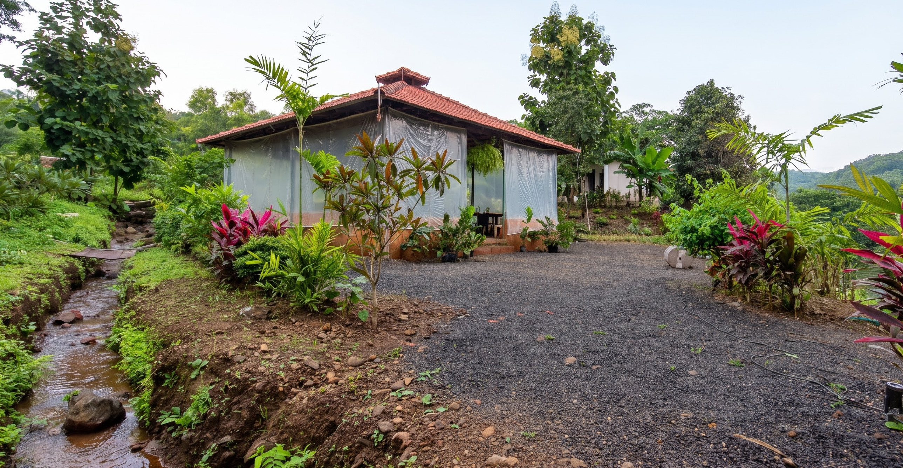
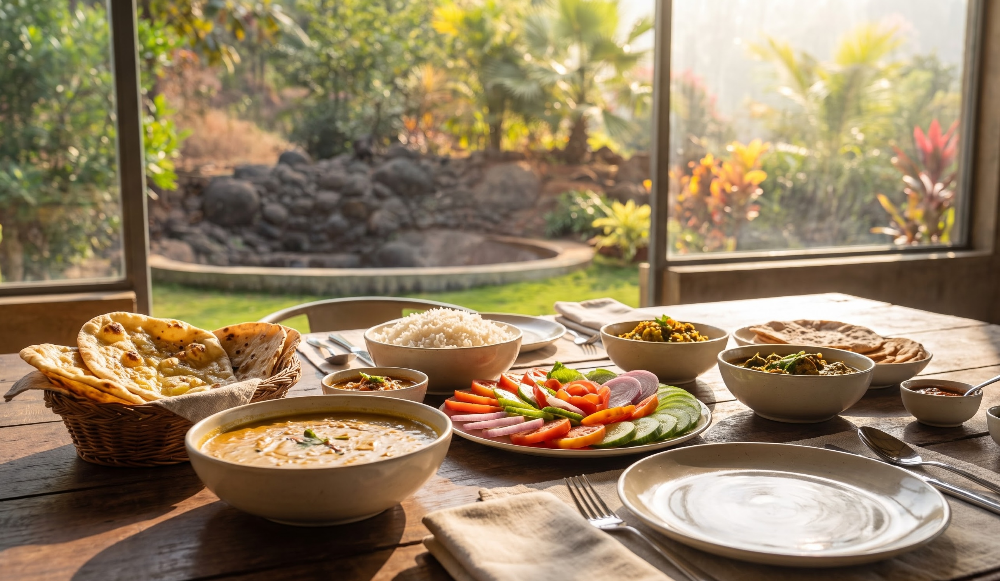
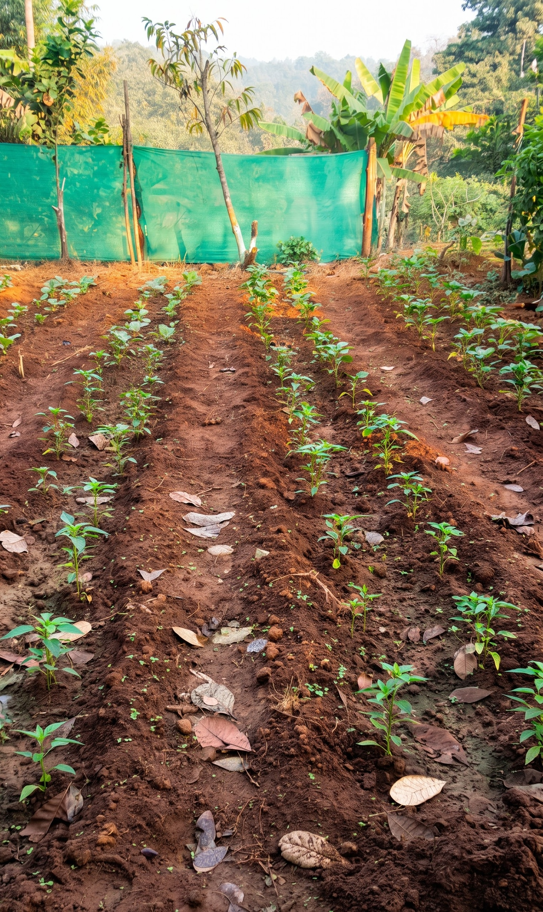
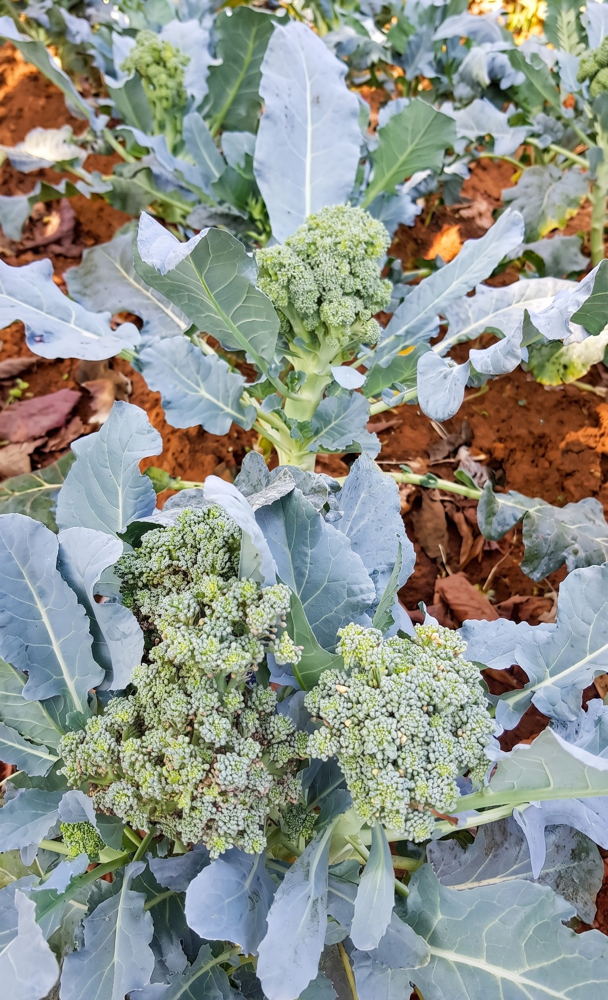
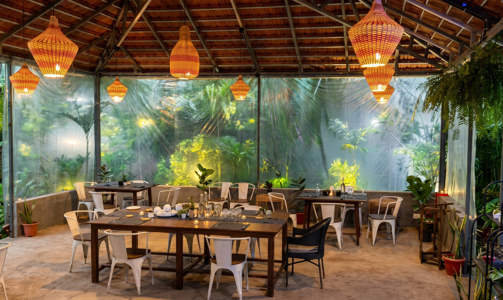
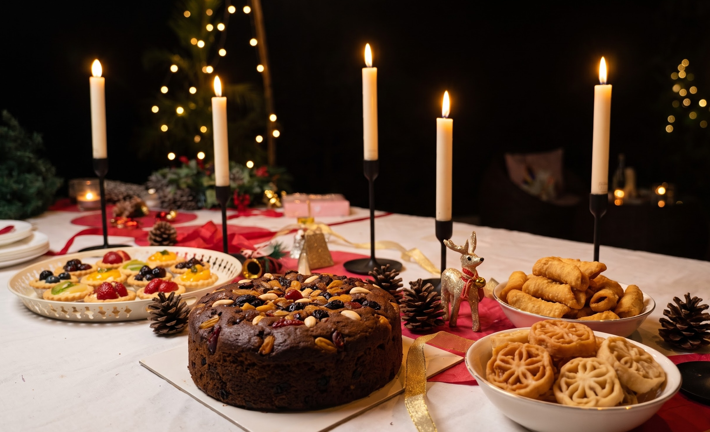
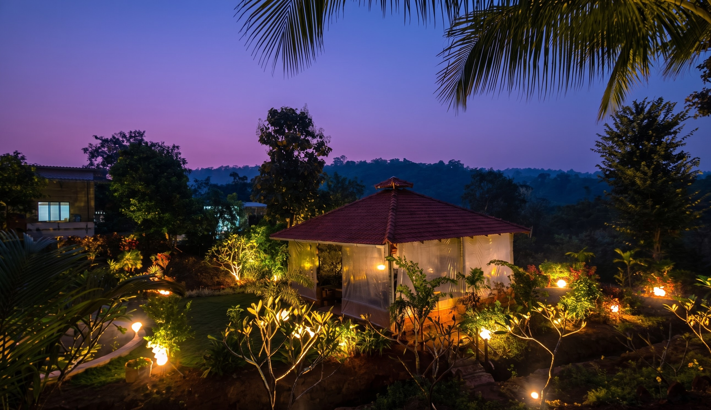

Start slowly.
A generous breakfast to begin the day, with the rest left open.

By the Bruk
Breakfast, lunch, and dinner are served among the gardens at Breathe Woods.
The restaurant at Breathe Woods
By the Bruk is our on-site restaurant, where local Maharashtrian flavours, seasonal ingredients, and unhurried meals come together. Sit down for a familiar favourite, something freshly picked, or simply another cup of chai.
Good to know Alcohol is not sold at By the Bruk. Guests are welcome to bring their own to enjoy with meals.

The everyday table
Meals here are generous, home-style, and made for lingering. Local Maharashtrian dishes sit alongside familiar comforts, with vegetarian, Jain, and non-vegetarian options available.
No planning a drive. No searching for a table. Just a good meal when you are ready for one.



From the garden
Seasonal vegetables, fruit, and herbs grow across the property’s gardens. When the harvest allows, they find their way to the table; the rest comes from nearby growers and markets.
It is a simple, seasonal way of cooking—shaped by what is fresh, local, and ready now.

After dark
As the day cools, By the Bruk settles into a softer kind of evening. The lamps come on, the gardens grow quiet, and dinner can take its own sweet time.

Make an occasion of it
Birthdays, anniversaries, family get-togethers, or a festive dinner with your people—let us help make the meal feel special.
Tell us what you are celebrating when you book, and we will help plan the table around it.
Plan a celebrationMeals, your way
All stays include breakfast. Add the meals that suit your plans, or let By the Bruk take care of the whole day.
A generous breakfast to begin the day, with the rest left open.
Breakfast plus either lunch or dinner, depending on where the day takes you.
Breakfast, lunch, evening tea with light snacks, and dinner.
From the table
Two notes from guests who came hungry and left happy.
“Food was local and fabulous. We were delighted with quality and quantity both.”
“Loved the courteous staff and the amazing hearty meals served on all days.”

By the Bruk